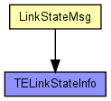
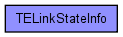

Represents a link in the TED and in LinkStateMsg packets.
The following diagram shows usage relationships between types. Unresolved types are missing from the diagram. Click here to see the full picture.
The following diagram shows inheritance relationships for this type. Unresolved types are missing from the diagram. Click here to see the full picture.
| Name | Type | Description |
|---|---|---|
| timestamp | simtime_t |
time of originating this entry |
| advrouter | IPAddress |
routerId of originator of this link state entry |
| metric | double |
link metric |
| linkid | IPAddress |
identifies link within advrouter; set to peer's address |
| state | bool |
false = down, true = up |
| UnResvBandwidth | double[8] |
unreserved bandwidths --FIXME indexed by what? |
| local | IPAddress |
address of local interface of this link |
| remote | IPAddress |
address of "gateway" to peer |
| MaxBandwidth | double |
maximum bandwidth (bps) |
| messageId | unsigned int |
id assigned to originating LinkStateMsg (FIXME or?) |
| sourceId | unsigned int |
FIXME looks like this is the same as advrouter -- really needed? |
// // Represents a link in the TED and in LinkStateMsg packets. // struct TELinkStateInfo { IPAddress advrouter; // routerId of originator of this link state entry IPAddress linkid; // identifies link within advrouter; set to peer's address IPAddress local; // address of local interface of this link IPAddress remote; // address of "gateway" to peer double metric; // link metric double MaxBandwidth; // maximum bandwidth (bps) double UnResvBandwidth[8]; // unreserved bandwidths --FIXME indexed by what? simtime_t timestamp; // time of originating this entry unsigned int sourceId; // FIXME looks like this is the same as advrouter -- really needed? unsigned int messageId; // id assigned to originating LinkStateMsg (FIXME or?) bool state; // false = down, true = up }